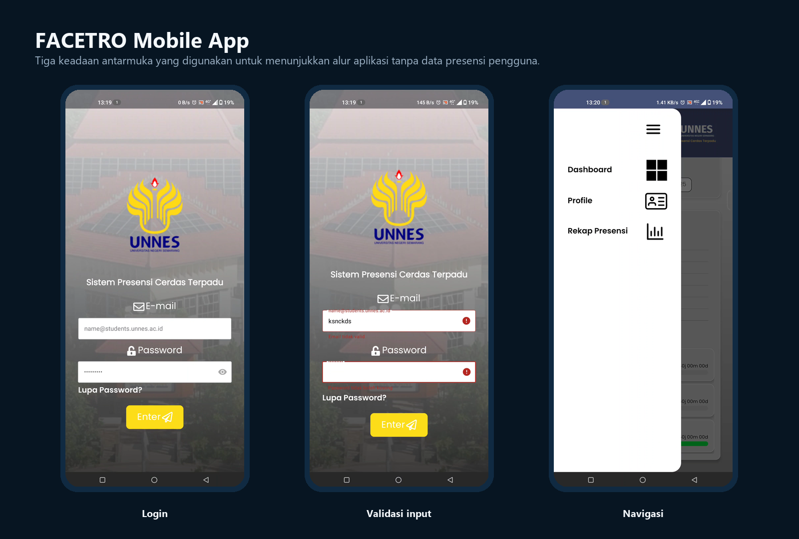

AI vision system
Lapisan computer vision menangani pengenalan wajah sebagai mekanisme identifikasi pada sistem keseluruhan.
Semua Proyek/FACETRO Attendance System
← Kembali ke semua proyekComputer Vision System · Mobile · IT Support
Sistem presensi berbasis face recognition dengan computer vision dan deep learning; kontribusi saya berfokus pada aplikasi Android pendamping serta dukungan implementasi, konfigurasi, dan troubleshooting di lapangan.
Fokus pekerjaan

FACETRO adalah sistem presensi yang menggunakan face recognition berbasis computer vision dan deep learning pada perangkat utama, lalu menghubungkan hasil presensi dengan layanan backend dan aplikasi Android pendamping.
Lapisan computer vision menangani pengenalan wajah sebagai mekanisme identifikasi pada sistem keseluruhan.
Aplikasi Android memberi pengguna akses ke informasi profil, ringkasan, dan rekap presensi.
Perangkat, aplikasi, API, dan data perlu dikonfigurasi serta diperiksa bersama agar alur presensi dapat digunakan di lokasi.
Membantu pengembangan dan penyempurnaan aplikasi Android berbasis Kotlin untuk akses informasi presensi.
Mengerjakan pembaruan pada halaman login, dashboard, sidebar, profil, dan rekap presensi.
Mendukung instalasi, konfigurasi, troubleshooting perangkat, serta backup operasional pada empat titik implementasi.
Menyiapkan perangkat dan kebutuhan aplikasi sebelum pemasangan di lokasi.
Membantu konfigurasi perangkat dan memeriksa komunikasi aplikasi dengan layanan yang diperlukan.
Menguji alur penggunaan utama serta memastikan data dan antarmuka dapat diakses sesuai kebutuhan.
Menelusuri kendala dari sisi perangkat, aplikasi, koneksi API, atau sinkronisasi data.
Mendokumentasikan penanganan, melakukan backup yang diperlukan, dan mengoordinasikan tindak lanjut.
Case study ini menekankan kontribusi mobile dan operasional saya. Tidak ada data wajah, data presensi, kredensial, konfigurasi jaringan, atau source internal yang ditampilkan pada portofolio publik.
Pembaruan antarmuka mencakup login, dashboard, sidebar, profil, dan rekap presensi untuk membantu keterbacaan serta navigasi pengguna.
Implementasi mencakup pengecekan perangkat, penanganan kendala, dokumentasi, backup, dan koordinasi kebutuhan teknis di lapangan.